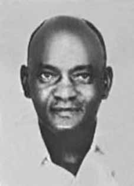

Edmur
Péricles
Camargo
BIOGRAFIA
Edmur Péricles Camargo, conhecido como Gauchão, ingressou no Partido Comunista Brasileiro (PCB) em 1944, para o qual trabalhou como jornalista em diversas publicações partidárias. Exilou-se no Uruguai depois do golpe militar, em abril de 1964. Três anos depois retornou ao Brasil. Acompanhou Carlos Marighella na cisão do partido e ingressou na recém fundada Ação Libertadora Nacional (ALN), organização de resistência armada à ditadura.
Em junho de 1969, decidiu se desligar da organização e sair de São Paulo. Criou a organização M3G (Marx, Mao, Marighella e Guevara) e, através dela, realizou pelo menos cinco assaltos a bancos, no Rio Grande do Sul. Acabou preso nas dependências do Dops em Porto Alegre, e foi um dos 70 presos políticos trocados pelo embaixador suíço Giovanni Enrico Bucher, sequestrado no Brasil pela Vanguarda Popular Revolucionária (VPR).
Em seguida, foi para o Chile do presidente Salvador Allende, onde viveu oficialmente como exilado político. Continuou em contato permanente com outros brasileiros no exílio, atuando na resistência. Em 16 de junho de 1971, embarcou num voo de carreira da Lan-Chile para o Uruguai, com escala na cidade de Buenos Aires. Nunca mais foi visto.
Em 2013, a Comissão Nacional da Verdade divulgou estudo reconhecendo que a Força Aérea Brasileira (FAB) foi responsável pelo desaparecimento de Gauchão, em 1971. Ele foi capturado pelos militares na Argentina, com o auxílio de autoridades daquele país e informantes uruguaios. A última informação que se tem de seu paradeiro é de que embarcou em um avião da FAB rumo ao Brasil.
Tal ação confirma que o governo brasileiro mantinha relações de cooperação com outros regimes militares latino-americanos ainda antes de se tornar pública a existência da Operação Condor, no ano de 1975. A Operação Condor era uma coordenação internacional entre as ditaduras do Cone Sul e a CIA, agência de espionagem e inteligência dos Estados Unidos. Foi criada com o objetivo de organizar a repressão a opositores dessas ditaduras, o que possibilitou a perseguição e a eliminação de lideranças de esquerda fora de seus territórios nacionais, como no caso de Edmur.
Edmur Péricles Camargo, known as Gauchão, joined the Brazilian Communist Party (PCB) in 1944, for which he worked as a journalist in several party publications. He went into exile in Uruguay after the military coup in April 1964. Three years later he returned to Brazil. He accompanied Carlos Marighella in the split of the party and joined the recently founded Ação Libertadora Nacional (ALN), an organization of armed resistance to the dictatorship.
In June 1969, he decided to leave the organization and leave São Paulo. He created the M3G organization (Marx, Mao, Marighella and Guevara) and, through it, carried out at least five bank robberies in Rio Grande do Sul. He ended up imprisoned in the Dops facilities in Porto Alegre, and was one of the 70 political prisoners exchanged by the Swiss ambassador Giovanni Enrico Bucher, kidnapped in Brazil by the Vanguarda Popular Revolucionária (VPR).
He then went to President Salvador Allende's Chile, where he officially lived as a political exile. He continued to be in permanent contact with other Brazilians in exile, working in the resistance. On June 16, 1971, he boarded a Lan-Chile flight to Uruguay, with a stopover in the city of Buenos Aires. He was never seen again.
In 2013, the National Truth Commission released a study recognizing that the Brazilian Air Force (FAB) was responsible for Gauchão's disappearance in 1971. He was captured by the military in Argentina, with the help of authorities from that country and Uruguayan informants. The last information we have on his whereabouts is that he boarded a FAB plane heading to Brazil.
This action confirms that the Brazilian government maintained cooperative relations with other Latin American military regimes even before the existence of Operation Condor became public in 1975. Operation Condor was an international coordination between the dictatorships of the Southern Cone and the CIA, the United States' spy and intelligence agency. It was created with the aim of organizing the repression of opponents of these dictatorships, which enabled the persecution and elimination of left-wing leaders outside their national territories, as in the case of Edmur.
Edmur Péricles Camargo, conocido como Gauchão, se afilió al Partido Comunista Brasileño (PCB) en 1944, para el que trabajó como periodista en varias publicaciones del partido. Se exilió en Uruguay tras el golpe militar de abril de 1964. Tres años después regresó a Brasil. Acompañó a Carlos Marighella en la escisión del partido y se unió a la recién fundada Ação Libertadora Nacional (ALN), organización de resistencia armada a la dictadura.
En junio de 1969 decidió abandonar la organización y abandonar São Paulo. Creó la organización M3G (Marx, Mao, Marighella y Guevara) y, a través de ella, realizó al menos cinco atracos a bancos en Rio Grande do Sul. Terminó encarcelado en las instalaciones del Dops en Porto Alegre, y fue uno de los 70 presos políticos canjeados por el embajador suizo Giovanni Enrico Bucher, secuestrado en Brasil por la Vanguarda Popular Revolucionária (VPR).
Luego viajó al Chile del presidente Salvador Allende, donde vivió oficialmente como exiliado político. Continuó en contacto permanente con otros brasileños en el exilio, trabajando en la resistencia. El 16 de junio de 1971 abordó un vuelo de Lan-Chile con destino a Uruguay, con escala en la ciudad de Buenos Aires. Nunca más se le volvió a ver.
En 2013, la Comisión Nacional de la Verdad publicó un estudio reconociendo que la Fuerza Aérea Brasileña (FAB) fue responsable de la desaparición de Gauchão en 1971. Fue capturado por militares en Argentina, con la ayuda de autoridades de ese país e informantes uruguayos. La última información que tenemos sobre su paradero es que abordó un avión de la FAB rumbo a Brasil.
Esta acción confirma que el gobierno brasileño mantuvo relaciones de cooperación con otros regímenes militares latinoamericanos incluso antes de que se hiciera pública la existencia de la Operación Cóndor en 1975. La Operación Cóndor fue una coordinación internacional entre las dictaduras del Cono Sur y la CIA, la agencia de espionaje e inteligencia de los Estados Unidos. Fue creado con el objetivo de organizar la represión de los opositores a estas dictaduras, lo que permitió la persecución y eliminación de líderes de izquierda fuera de sus territorios nacionales, como en el caso de Edmur.
CIRCUNSTÂNCIAS DA MORTE
Edmur Péricles Camargo foi preso em abril de 1970 e banido do país, após o sequestro do embaixador suíço no Brasil, Giovanni Enrico Bucher, quando 70 presos políticos foram trocados pelo diplomata. Foi para o Chile com os demais banidos, onde permaneceu até junho de 1971. Naquela época, a preocupação com a movimentação do grande número de asilados no Chile de Allende já não estava limitada às esferas de segurança e despontara também na agenda diplomática. Telegramas trocados entre a Secretaria de Estado (Ministério das Relações Exteriores – MRE) e a Embaixada em Buenos Aires, em janeiro de 1971, com o índice “Coordenação de medidas contra a subversão: Brasil-Argentina” trazem informações sobre as conversações entre as chancelarias dos dois países sobre a possibilidade de ser estabelecida uma adequada coordenação entre as autoridades competentes de ambos os países, em caráter confidencial, tendente a acentuar o controle de agentes extremistas, de seus deslocamentos, localização e elementos de luta. A proposta, que partiu dos argentinos, envolveria os canais diplomáticos: o embaixador João Hermes Pereira de Araujo relatou que o diretor-geral de Informações da chancelaria argentina sugeriu “que a troca de informações proposta poderia, a seu ver, processar-se no plano chancelaria-embaixada, em Brasília e em Buenos Aires”, que o sistema “deveria ter em vista máxima rapidez na troca das informações, a fim de ser eficaz”, e reiterou “a importância que o Palácio San Martin atribui a uma mais íntima e permanente colaboração com o Governo brasileiro em assunto de tão grande atualidade”. No dia 16 de junho de 1971, Péricles Camargo deixou Santiago do Chile com destino a Montevidéu para um tratamento ocular, uma vez que as torturas a que fora submetido no Brasil haviam comprometido sua visão. Os dados dessa viagem haviam sido comunicados, na véspera, pelo cônsul do Brasil em Santiago, embaixador Mellilo Moreira de Mello, em telegrama secreto-urgentíssimo à Secretaria de Estado. Por sua vez, segundo a informação no 68, de 16 de junho de 1971, um adido da aeronáutica na Embaixada brasileira em Montevidéu recebeu uma comunicação, através do posto Correio Aéreo Nacional (CAN) de Montevidéu, que – com seu próprio nome Edmur Péricles Camargo Villaça – o brasileiro estava viajando para o Uruguai pela LAN-Chile. Em contato com a companhia aérea, o adido verificou que o avião faria escala na Argentina e, após ligação à Embaixada do Brasil em Buenos Aires, deslocou-se àquela cidade “a fim de saber das providências que ali seriam tomadas”. Segundo o adido, “a polícia argentina prendeu Edmur no Aeroporto de Ezeiza e o entregou às autoridades brasileiras”. Em outra informação secreta, de n o 17, o adido do Exército em Buenos Aires é também notificado de que, em 16 de junho de 1971, Péricles Camargo “passaria por Buenos Aires, com destino a Montevidéu, viajando em avião da LAN-Chile, sendo-lhe solicitado verificar a possibilidade de obter das autoridades argentinas sua prisão e entrega às autoridades brasileiras”. O contato imediato com autoridades da Coordenação da Polícia Federal Argentina foi feito e, em resposta, chegou a comunicação de que “a Brigada da Repressão já tinha montado a operação”. O próprio adido que relata a prisão nesse documento foi ao aeroporto de Ezeiza e constatou que os elementos da polícia federal argentina estavam no aeroporto e lá teriam detido Péricles Camargo. Assim, de acordo com o informe, entraram em contato com as autoridades argentinas para detalhes de sua entrega às autoridades brasileiras. Foi providenciado um avião da Força Aérea Brasileira (FAB) que chegou em Buenos Aires na madrugada do dia 17 e, algumas horas depois, partiu para a base militar do Galeão, no Rio de Janeiro. “Por volta das 5h do dia 17, chegou na zona militar do aeroporto um avião da FAB para o qual foi transferido o terrorista [Péricles Camargo] tendo o avião decolado por volta das 6h45”. O avião da FAB levava Péricles Camargo “acompanhado do coronel Lana, adido aeronáutico e do secretário Nery que seguiu de Brasília no mesmo avião”. O diplomata Paulo Sérgio Nery, morto em 1979, exercia na época a função de diretor-executivo do Centro de Informações do Exterior (Ciex), lotado na Secretaria-Geral do MRE. Miguel Cunha Lana era coronel-aviador e exercia as funções de adido militar aeronáutico em Buenos Aires. De acordo com esse mesmo documento, “o adido da aeronáutica e seu substituto”, que estavam em Buenos Aires, teriam solucionado “todos os problemas referentes à autorização para sobrevoo, utilização da área militar aérea e etc.”. Os agentes apreenderam os papéis que estavam com Edmur, tais como o seu salvo conduto, a documentação do serviço de saúde do Chile e uma carta do almirante Cândido Aragão que deveria ser entregue em mãos ao presidente João Goulart. A informação n o 68 registra que “o agente do Itamaraty conseguiu obter uma carta de apresentação do general Aragão para um contato de Edmur em Montevidéu”. Sobre a prisão de Péricles Camargo, o adido de Montevidéu ainda comenta que “apesar das grandes dificuldades que se tem para acompanhar esse pessoal no Uruguai, no caso presente, parece que a polícia argentina se precipitou pois, no momento em que o fato venha a público, será difícil justificar a entrega e o recebimento de um banido”. A relação de passageiros da LAN-Chile veio com a observação de que Edmur Camargo foi detido pela polícia de Ezeiza. O adido naval do Brasil no Chile, identificado como Jordão, em documento do Ciex, recebeu “a informação da viagem de Edmur Péricles Camargo graças à infiltração do Serviço Argentino na LAN-Chile e que, de posse da informação, transmitira a mesma ao adido aeronáutico em Buenos Aires, o qual montara a „operação prisão‟ de Edmur”. De acordo com o Jornal de Serviço de 2 de novembro de 1970, o capitão de mar e guerra Benedito Jordão de Andrade, adido naval no Chile, representou o governo brasileiro nas solenidades de posse do presidente daquele país, Salvador Allende. Segundo o Diário Oficial, em 19 de dezembro de 1971, Benedito Jordão de Andrade foi exonerado do cargo de adido naval junto à Embaixada do Brasil no Chile, com sede em Santiago. O Ciex, em índice dedicado às “Atividades de asilados e foragidos brasileiros”, distribuiu aos demais órgãos da comunidade de informações – CIE, SNI-AC, 2a seção/EME, 2a seção/EMAER, Cenimar etc. – a informação no 429, timbrada como secreta, datada de 21 de outubro de 1971, em que informava a entrega de um documento às autoridades chilenas por parte de exilados e refugiados brasileiros dando conta do desaparecimento de Edmur Péricles Camargo e informando que […] até esta data [agosto de 1971] EDMUR CAMARGO não mais se comunicou com qualquer de seus companheiros, os quais têm recebido informes [de companheiros em Montevidéu e Buenos Aires], de que EDMUR CAMARGO teria sido preso pelas autoridades argentinas e brasileiras e entregue à ditadura brasileira.
Edmur Péricles Camargo was arrested in April 1970 and banned from the country, after the kidnapping of the Swiss ambassador to Brazil, Giovanni Enrico Bucher, when 70 political prisoners were exchanged for the diplomat. He went to Chile with the other banished people, where he remained until June 1971. At that time, concern about the movement of the large number of asylum seekers in Allende's Chile was no longer limited to security spheres and had also emerged on the diplomatic agenda. Telegrams exchanged between the Secretariat of State (Ministry of Foreign Affairs – MRE) and the Embassy in Buenos Aires, in January 1971, with the index “Coordination of measures against subversion: Brazil-Argentina” bring information about the conversations between the chancelleries of the two countries on the possibility of establishing adequate coordination between the competent authorities of both countries, on a confidential basis, with a view to enhancing the control of extremist agents, their movements, location and elements of fight. The proposal, which came from the Argentines, would involve diplomatic channels: ambassador João Hermes Pereira de Araujo reported that the Director General of Information of the Argentine Foreign Ministry suggested “that the proposed exchange of information could, in his view, be processed at the chancellery-embassy level, in Brasília and Buenos Aires”, that the system “should aim for maximum speed in the exchange of information, in order to be effective”, and reiterated “the importance that the San Martin Palace attributes to a more intimate and permanent collaboration with the Brazilian Government on such a topical issue”. On June 16, 1971, Péricles Camargo left Santiago de Chile for Montevideo for eye treatment, as the torture he had been subjected to in Brazil had compromised his vision. The details of this trip had been communicated the day before by the Brazilian consul in Santiago, ambassador Mellilo Moreira de Mello, in a very urgent secret telegram to the Secretariat of State. In turn, according to information no. 68, dated June 16, 1971, an aeronautical attaché at the Brazilian Embassy in Montevideo received a communication, through the Correio Aéreo Nacional (CAN) post in Montevideo, that – under his own name Edmur Péricles Camargo Villaça – the Brazilian was traveling to Uruguay via LAN-Chile. In contact with the airline, the attaché verified that the plane would stop in Argentina and, after calling the Brazilian Embassy in Buenos Aires, he went to that city “in order to find out about the measures that would be taken there”. According to the attaché, “the Argentine police arrested Edmur at Ezeiza Airport and handed him over to the Brazilian authorities”. In another secret information, number 17, the Army attaché in Buenos Aires is also notified that, on June 16, 1971, Péricles Camargo “would pass through Buenos Aires, bound for Montevideo, traveling on a LAN-Chile plane, and was asked to verify the possibility of obtaining from the Argentine authorities his arrest and handover to the Brazilian authorities”. Immediate contact with authorities from the Argentine Federal Police Coordination was made and, in response, the communication came that “the Repression Brigade had already mounted the operation”. The very attaché who reports the arrest in this document went to Ezeiza airport and found that members of the Argentine federal police were at the airport and had detained Péricles Camargo there. Therefore, according to the report, they contacted the Argentine authorities for details of their handover to the Brazilian authorities. A Brazilian Air Force (FAB) plane was arranged and arrived in Buenos Aires in the early hours of the 17th and, a few hours later, departed for the Galeão military base, in Rio de Janeiro. “Around 5am on the 17th, a FAB plane arrived in the military zone of the airport to which the terrorist [Péricles Camargo] was transferred and the plane took off at around 6:45am.” The FAB plane carried Péricles Camargo “accompanied by Colonel Lana, aeronautical attaché and secretary Nery who flew from Brasília on the same plane”. Diplomat Paulo Sérgio Nery, who died in 1979, was at the time the executive director of the Foreign Information Center (Ciex), located in the General Secretariat of the MRE. Miguel Cunha Lana was an aviator colonel and served as military aeronautical attaché in Buenos Aires. According to this same document, “the aeronautics attaché and his replacement”, who were in Buenos Aires, had resolved “all problems relating to authorization for overflight, use of the military air area, etc.”. The agents seized the papers that were with Edmur, such as his safe conduct, documentation from the Chilean health service and a letter from Admiral Cândido Aragão that was supposed to be delivered to President João Goulart. Information no. 68 records that “the Itamaraty agent managed to obtain a letter of introduction from General Aragão to a contact of Edmur in Montevideo”. Regarding the arrest of Péricles Camargo, the Montevideo attaché also comments that “despite the great difficulties faced in accompanying these people in Uruguay, in the present case, it seems that the Argentine police were hasty because, once the fact becomes public, it will be difficult to justify handing over and receiving a banished person”. The LAN-Chile passenger list came with the observation that Edmur Camargo was detained by the Ezeiza police. Brazil's naval attaché in Chile, identified as Jordão, in a Ciex document, received “information about Edmur Péricles Camargo's trip thanks to the infiltration of the Argentine Service in LAN-Chile and, in possession of the information, he transmitted it to the aeronautical attaché in Buenos Aires, who had mounted Edmur's 'prison operation'”. According to the Jornal de Serviço of November 2, 1970, sea and war captain Benedito Jordão de Andrade, naval attaché in Chile, represented the Brazilian government at the inauguration ceremonies of that country's president, Salvador Allende. According to the Official Gazette, on December 19, 1971, Benedito Jordão de Andrade was dismissed from his position as naval attaché at the Brazilian Embassy in Chile, based in Santiago. Ciex, in an index dedicated to the “Activities of Brazilian asylum seekers and fugitives”, distributed it to other bodies in the information community – CIE, SNI-AC, 2nd section/EME, 2nd section/EMAER, Cenimar, etc. – information no. 429, stamped as secret, dated October 21, 1971, which reported the delivery of a document to the Chilean authorities by Brazilian exiles and refugees reporting the disappearance of Edmur Péricles Camargo and informing that […] until this date [August 1971] EDMUR CAMARGO no longer communicated with any of his companions, who have received reports [from companions in Montevideo and Buenos Aires], that EDMUR CAMARGO was arrested by Argentine and Brazilian authorities and handed over to the Brazilian dictatorship.
Edmur Péricles Camargo fue detenido en abril de 1970 y expulsado del país, tras el secuestro del embajador de Suiza en Brasil, Giovanni Enrico Bucher, cuando 70 presos políticos fueron canjeados por el diplomático. Junto con los demás desterrados viajó a Chile, donde permaneció hasta junio de 1971. En aquel momento, la preocupación por el movimiento del gran número de solicitantes de asilo en el Chile de Allende ya no se limitaba a los ámbitos de seguridad y también había surgido en la agenda diplomática. Telegramas intercambiados entre la Secretaría de Estado (Ministerio de Relaciones Exteriores – MRE) y la Embajada en Buenos Aires, en enero de 1971, con el índice “Coordinación de medidas contra la subversión: Brasil-Argentina” traen información sobre las conversaciones entre las cancillerías de los dos países sobre la posibilidad de establecer una adecuada coordinación entre las autoridades competentes de ambos países, de forma confidencial, con miras a mejorar el control de los agentes extremistas, sus movimientos, ubicación y elementos de lucha. La propuesta, proveniente de los argentinos, implicaría canales diplomáticos: el embajador João Hermes Pereira de Araujo informó que el Director General de Información de la Cancillería argentina sugirió “que el intercambio de información propuesto podría, a su juicio, tramitarse a nivel de cancillería-embajada, en Brasilia y Buenos Aires”, que el sistema “debe apuntar a la máxima celeridad en el intercambio de información, para que sea efectivo”, y reiteró “la importancia que el Palacio de San Martín atribuye a una colaboración más íntima y permanente con el Gobierno brasileño sobre un tema de tanta actualidad”. El 16 de junio de 1971, Péricles Camargo partió de Santiago de Chile rumbo a Montevideo para someterse a un tratamiento ocular, ya que las torturas a las que había sido sometido en Brasil habían comprometido su visión. Los detalles de este viaje habían sido comunicados la víspera por el cónsul brasileño en Santiago, embajador Mellilo Moreira de Mello, en un telegrama secreto muy urgente a la Secretaría de Estado. A su vez, según información no. 68, de 16 de junio de 1971, un agregado aeronáutico de la Embajada de Brasil en Montevideo recibió una comunicación, a través del Correo Aéreo Nacional (CAN) de Montevideo, de que –bajo su propio nombre Edmur Péricles Camargo Villaça– el brasileño viajaba hacia Uruguay vía LAN-Chile. En contacto con la aerolínea, el agregado constató que el avión haría escala en Argentina y, tras llamar a la Embajada de Brasil en Buenos Aires, se dirigió a esa ciudad “para informarse de las medidas que allí se tomarían”. Según el agregado, “la policía argentina detuvo a Edmur en el aeropuerto de Ezeiza y lo entregó a las autoridades brasileñas”. En otra información secreta, la número 17, también se notifica al agregado del Ejército en Buenos Aires que, el 16 de junio de 1971, Péricles Camargo “pasaría por Buenos Aires con destino a Montevideo, viajando en un avión LAN-Chile, y se le solicitó verificar la posibilidad de obtener de las autoridades argentinas su detención y entrega a las autoridades brasileñas”. Se tomó contacto inmediato con autoridades de la Coordinación de la Policía Federal Argentina y, como respuesta, llegó la comunicación de que “la Brigada de Represión ya había montado el operativo”. El mismo agregado que relata la detención en este documento fue al aeropuerto de Ezeiza y encontró que miembros de la policía federal argentina se encontraban en el aeropuerto y habían detenido allí a Péricles Camargo. Por ello, según el informe, se comunicaron con las autoridades argentinas para obtener detalles de su entrega a las autoridades brasileñas. Un avión de la Fuerza Aérea Brasileña (FAB) se dispuso y llegó a Buenos Aires en la madrugada del día 17 y, pocas horas después, partió hacia la base militar de Galeão, en Río de Janeiro. “Hacia las 5 de la mañana del día 17, un avión de la FAB llegó a la zona militar del aeropuerto a donde fue trasladado el terrorista [Péricles Camargo] y el avión despegó alrededor de las 6:45 de la mañana”. El avión de la FAB transportaba a Péricles Camargo “acompañado por el coronel Lana, el agregado aeronáutico y el secretario Nery, que voló desde Brasilia en el mismo avión”. El diplomático Paulo Sérgio Nery, fallecido en 1979, era entonces director ejecutivo del Centro de Información Exterior (Ciex), ubicado en la Secretaría General del MRE. Miguel Cunha Lana fue coronel aviador y se desempeñó como agregado aeronáutico militar en Buenos Aires. Según ese mismo documento, “el agregado aeronáutico y su reemplazante”, que se encontraban en Buenos Aires, habían resuelto “todos los problemas relativos a la autorización de sobrevuelo, uso del área aérea militar, etc.”. Los agentes confiscaron los documentos que se encontraban con Edmur, como su salvoconducto, documentación del servicio de salud chileno y una carta del almirante Cândido Aragão que debía ser entregada al presidente João Goulart. Información no. 68 registra que “el agente de Itamaraty logró obtener una carta de presentación del general Aragão para un contacto de Edmur en Montevideo”. Respecto a la detención de Péricles Camargo, el agregado de Montevideo también comenta que “a pesar de las grandes dificultades encontradas para acompañar a estas personas en Uruguay, en el presente caso parece que la policía argentina se apresuró porque, una vez que el hecho se haga público, será difícil justificar la entrega y recepción de una persona desterrada”. La lista de pasajeros de LAN-Chile llegó con la observación de que Edmur Camargo fue detenido por policías de Ezeiza. El agregado naval de Brasil en Chile, identificado como Jordão, en un documento de Ciex, recibió “información sobre el viaje de Edmur Péricles Camargo gracias a la infiltración del Servicio Argentino en LAN-Chile y, en posesión de la información, la transmitió al agregado aeronáutico en Buenos Aires, que había montado el 'operativo prisión' de Edmur”. Según el Jornal de Serviço del 2 de noviembre de 1970, el capitán de navío y de guerra Benedito Jordão de Andrade, agregado naval en Chile, representó al gobierno brasileño en las ceremonias de toma de posesión del presidente de ese país, Salvador Allende. Según el Diario Oficial, el 19 de diciembre de 1971 Benedito Jordão de Andrade fue cesado de su cargo como agregado naval en la Embajada de Brasil en Chile, con sede en Santiago. Ciex, en un índice dedicado a las “Actividades de los solicitantes de asilo y prófugos brasileños”, lo distribuyó a otros organismos de la comunidad de información – CIE, SNI-AC, 2ª sección/EME, 2ª sección/EMAER, Cenimar, etc. – información n. 429, sellada como secreta, de 21 de octubre de 1971, en la que se informó la entrega de un documento a las autoridades chilenas por parte de exiliados y refugiados brasileños dando cuenta de la desaparición de Edmur Péricles Camargo e informando que […] hasta esta fecha [agosto de 1971] EDMUR CAMARGO ya no se comunicaba con ninguno de sus compañeros, quienes han recibido informes [de compañeros en Montevideo y Buenos Aires], de que EDMUR CAMARGO fue detenido por argentinos y brasileños. autoridades y entregado a la dictadura brasileña.